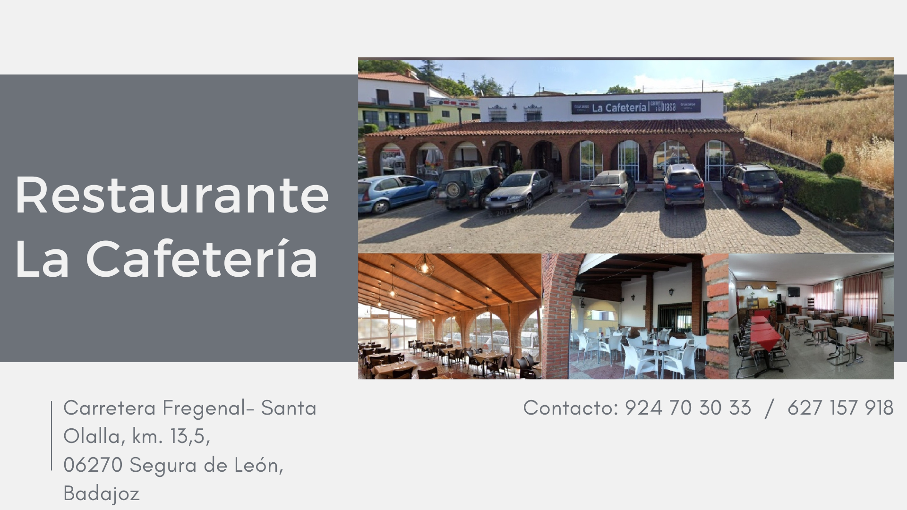
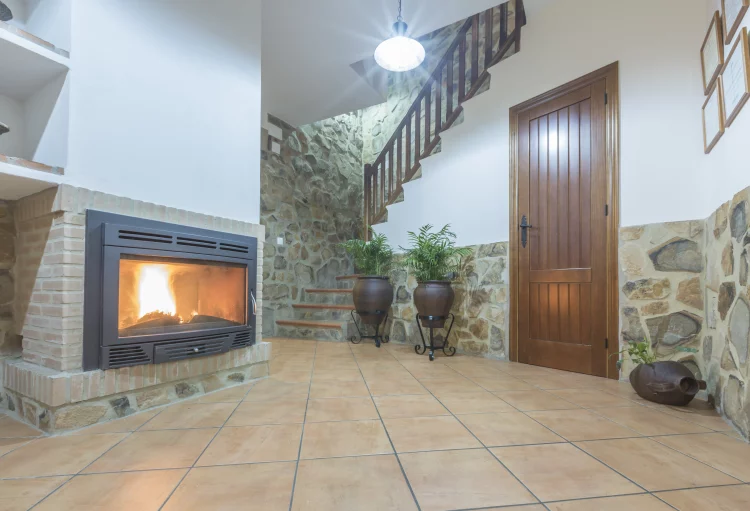
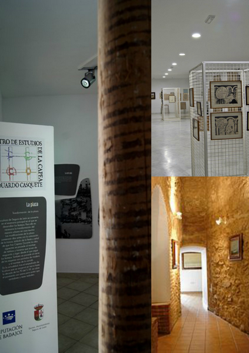
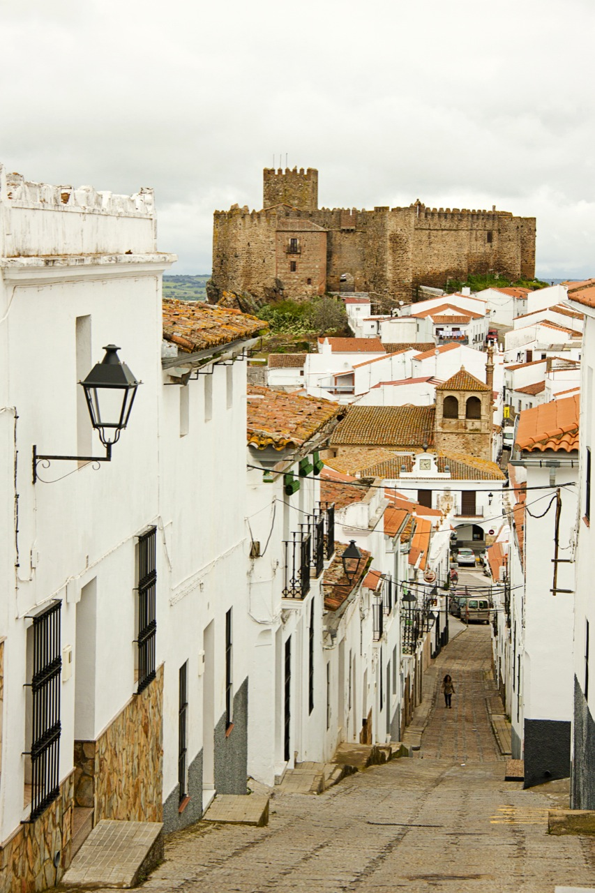

Situada al suroeste de Badajoz, Segura de León pertenece a la comarca de Tentudía. Hubo una villa romana en el paraje conocido como el Torreón, cerca del santuario del Cristo de la Reja. Según la tradición, fue el asentamiento inicial de Segura. En torno a su castillo del Siglo XIV, se emprendería la construcción de la villa, hoy día sus callejuelas aún se desparraman en un sinuoso trazado de rondas y vías. Población muy vinculada a la Orden de Santiago.
Cafeteria Manolo
Casa Rural La Fuente
MUSEO Y CENTRO DE ESTUDIOS DE LA CAPEA EDUARDO CASQUETE
Castillo Santiaguista
Construido por la Orden de Santiago, aún quedan algunos tramos de la muralla que lo rodeaba, así como el foso de la puerta. Acceder al castillo se hacía a través de un puente. El paseo de ronda recorre toda la muralla y desde él se accede a los torreones y a la puerta principal. Desde él podemos observar el pueblo que duerme bajo sus pies.
Una canción:
Trata sobre las fiestas del pueblo: